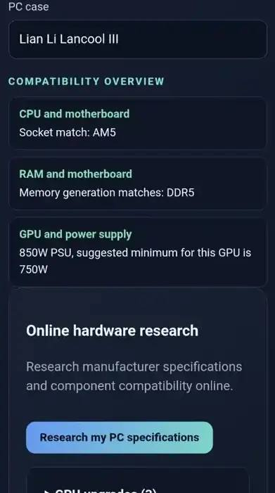

Australian price comparison
Search for a component, choose a retailer preference and review cached Australian listings with prices and links to retailer details. The example shows 16 cached results for an AMD Radeon RX 9070 XT search.
A PC research and building application designed to make hardware decisions easier. PartPilot brings your PC specifications, component compatibility, upgrade recommendations and Australian price research together in one place — whether you're an experienced builder or just learning what goes into a computer.
A solo-developed project, built and improved through ongoing research, testing and iteration.
The Android app download is available from the project releases. Open the latest release and download the PartPilot APK to install it on your Android device.
Open PartPilot downloads ↗These screenshots show two parts of the application: searching Australian retailer listings for a component, and checking how the parts in a PC build work together.
Search for a component, choose a retailer preference and review cached Australian listings with prices and links to retailer details. The example shows 16 cached results for an AMD Radeon RX 9070 XT search.

Enter your own components and review compatibility checks, including CPU and motherboard socket matching, RAM generation matching, and GPU power supply requirements.
PartPilot is designed to support the full PC research process, from recording an existing build to deciding what to upgrade next.
Enter your own PC components and specifications, then keep your hardware information organised in one place.
Keep a record of your system so you can return to your build, review its parts and use it as the basis for future upgrade research.
Look up hardware, compare specifications and assess possible replacement components before spending money.
Review important compatibility details such as CPU socket and motherboard matching, memory generation and GPU power requirements.
Find upgrade options based on the hardware in your system, rather than researching every component from scratch.
Use recommendation scores and categories to help judge how suitable an upgrade is for the build and the intended outcome.
Compare maximum-performance options against performance-per-dollar and value-focused recommendations, making the trade-offs easier to understand.
Search component listings from Australian retailers, compare available prices and open the retailer listing to check current price and stock.
Explore component specifications and compatibility explanations to build confidence and learn what each part does.
Enter the parts in your current PC to create a clear starting point for research.
Review supported matches and important warnings before choosing replacement parts.
Compare upgrade options by performance, value and performance per dollar.
Search listings and follow retailer links to confirm the latest price and availability.
The current local hardware database includes a catalogue of processors and graphics cards for the research and recommendation engine. It is designed to grow as more hardware is researched and added.
Counts reflect the database version recorded during development and may change as new models are added.
Choosing PC parts can be confusing when specifications, sockets, memory types, power requirements and model names all matter. PartPilot aims to make that process more approachable by bringing the information together, explaining compatibility checks and presenting upgrade choices in a way that's easier to compare.
Learn what the main PC components are and understand the checks that matter when putting a system together.
Record your current specifications and investigate upgrades that make sense for your existing hardware.
Compare performance-focused recommendations with options that aim to deliver more performance for the money.
I'm continuing to expand its hardware research, refine its recommendations and improve the experience for PC builders.